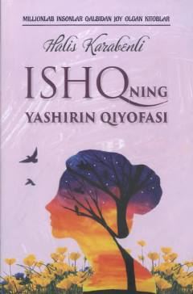

IYBarham topgan sevgi va ruhiy kechinmalar haqida falsafiy-badiiy asar.
Halis Karabenlining ushbu asarida barham topgan sevgidan so'ng inson qalbida kechadigan iztiroblar va ishqning yashirin qiyofasi haqida hikoya qilinadi. Kitob insonning o'zini anglash yo'li, hayotiy sinovlar va ruhiy kechinmalarni falsafiy tahlil etadi.